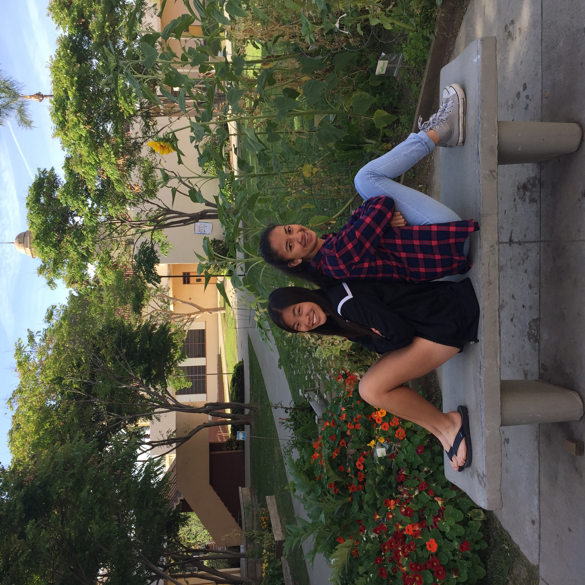

This project we had to create a filter for an image. Using Canopy I made a star border around a basketball image. Also we got to create our own Instagram like filters. My partner and I created a squircle that changes colors based on the background of the picture.
Here's the before and after image for our Instagram Filter

Here's the after image!
Heres the code for the filter!
import PIL
import matplotlib.pyplot as plt # single use of plt is commented out
import os.path
import numpy as np
import math
def distance2(xi, yi, xii, yii):
sq1 = (xi-xii)*(xi-xii)
sq2 = (yi-yii)*(yi-yii)
return sq1 + sq2
def teryn(original_image):
""" Insert comment regarding what this does here
original_image must be a PIL.Image
"""
#converts the image to a numpy ndarray
original_image = original_image.convert("RGB")
img = np.array(original_image)
height = len(img)
width = len(img[0])
a= width/2.01
k= height/2.01
for row in range(0, height):
for col in range(0, width):
r,g,b = img[row][col] #gets the r,g,b values from the pixel
if width == height:
if (col-a)**4+(row-k)**4 > (height/2.01)**4: #outside circle
dex = (( distance2(width/2, col, height/2, row))-(width/2)**2)
maxd = (((width/2)*math.sqrt(2))-width/2)
#print str(dex) + " " + str(maxd) + " " + str(row) + " " + str(col) + " "
if 255-(float(dex)/maxd)*(0) == 255:
b = b*(float(dex)/maxd)
r = r-(75 * float(dex)/maxd)#intentional underflow/overflow
if b > 255:#prevents overflow
b = 255
img[row][col] = [r, g, b]
else:
img[row][col] = [r, 0, 0]
#convert it back to an image from an array
result = PIL.Image.fromarray(np.uint8(img))
return result
def get_images(directory=None):
""" Returns PIL.Image objects for all the images in directory.
If directory is not specified, uses current directory.
Returns a 2-tuple containing
a list with a PIL.Image object for each image file in root_directory, and
a list with a string filename for each image file in root_directory
"""
if directory == None:
directory = os.getcwd() # Use working directory if unspecified
image_list = [] # Initialize aggregaotrs
file_list = []
directory_list = os.listdir(directory) # Get list of files
for entry in directory_list:
absolute_filename = os.path.join(directory, entry)
try:
image = PIL.Image.open(absolute_filename)
file_list += [entry]
image_list += [image]
except IOError:
pass # do nothing with errors tying to open non-images
return image_list, file_list
def garima(directory=None):
""" Saves a modfied version of each image in directory.
Uses current directory if no directory is specified.
Places images in subdirectory 'modified', creating it if it does not exist.
New image files are of type PNG and have transparent rounded corners.
"""
if directory == None:
directory = os.getcwd() # Use working directory if unspecified
# Create a new directory 'altered'
new_directory = os.path.join(directory, 'altered')
try:
os.mkdir(new_directory)
except OSError:
pass # if the directory already exists, proceed
#load all the images
image_list, file_list = get_images(directory)
#go through the images and save modified versions
for n in range(len(image_list)):
# Parse the filename
filename, filetype = file_list[n].split('.')
# calls your modified method, passing the color parameter
new_image = teryn(image_list[n])
#save the altered image, suing PNG to retain transparency
new_image_filename = os.path.join(new_directory, filename + '.png')
new_image.save(new_image_filename)